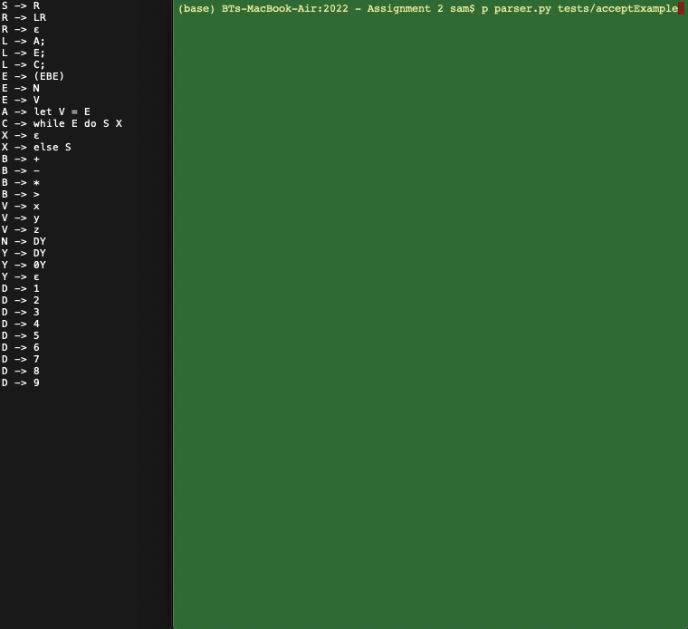
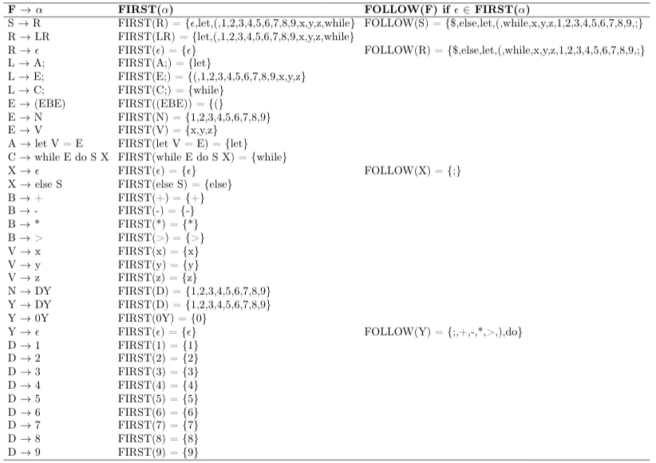

Given the grammar pictured on the left in the GIF below, parse strings using an LL1 table driven parser using left-most derivation. What is an LL grammar and parsing?
The grammar is pictured on the left hand side of the above GIF. On the right hand side of the GIF, the string being parsed is on the left hand side and the stack is on the right hand side. The LL1 parse table, which includes first and follow sets, is pictured below.
The error recovery feature kicks in during any of the three error cases that can occur during the parser loop. The first error is when the symbol on the stack is a terminal and the next part of the string does not match this terminal. In this case, the output message is that the program was expecting the matching terminal to be outputted and error recovery mode is entered. The second error is when the symbol on the stack is $ but the next part of the string is not $. In this case, the output message is that the program was expecting the matching $ to be outputted and error recovery mode is entered. The third error is there is a variable T on the stack but there is no rule between this variable and the next part of the string. In this case, FIRST and FOLLOW sets are used by the program to output what may have been expected. The program iterates through every element in T’s FIRST and FOLLOW sets to find the resulting production rules that are possible and then outputs which of them it was expecting from the string. The error recovery mode offers the user the option to delete a single character, insert a single character, replace the entire string and stack, enter into ’undo mode’, reset the stack, view the current string and stack, accept changes to try continue parsing or simply exit error recovery mode altogether (hence resulting in the string to be REJECTED). The error recovery mode also contains a primitive recommendation system that, if any recommendations are found that could be made to reach an accept state, the user is notified.